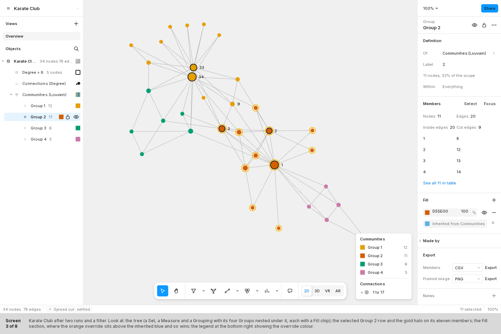
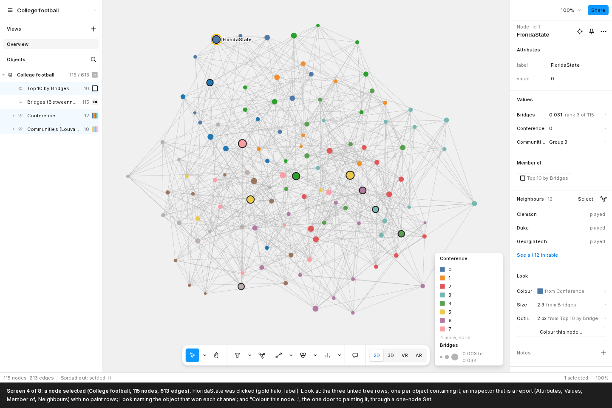
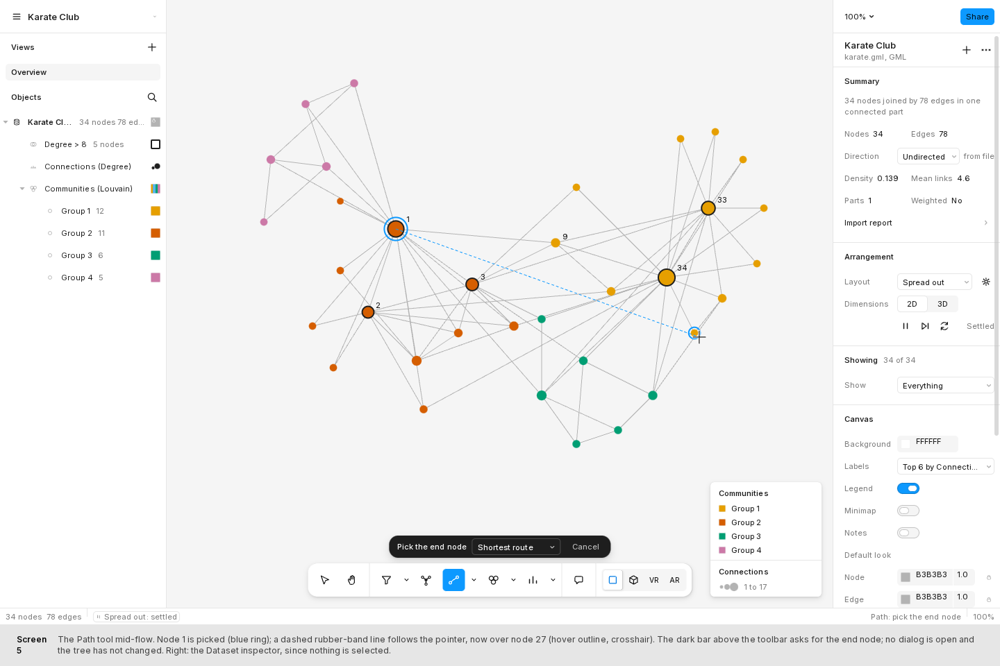
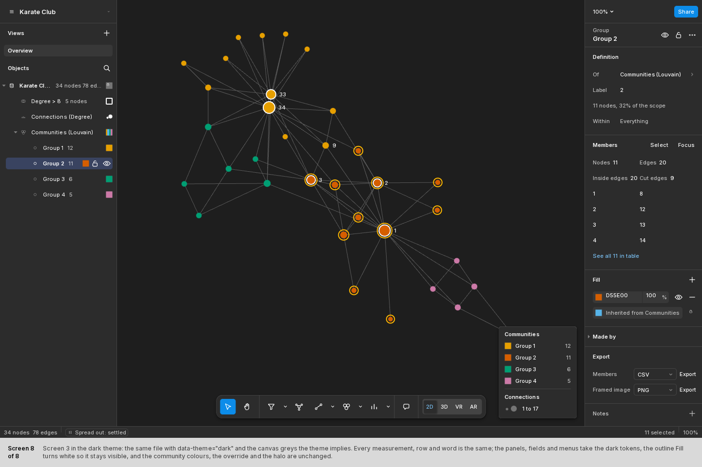

Object-first graphty: the mocks
The current mocks are round 2: open the round-2 gallery (fifteen screens generated from one spec each: the frame with no rail, the tabbed inspector, the labelled toolbar with its secondary bar, two Paths as edge styles, the timeline, the Import and reload dialogs, the toolbar reference sheet). The eight screens below are round 1, kept for history; their spec is screens.md and the round-2 spec is ../round-2/screens.md.
Round 1 (history)
Eight stills of a graphty app whose left panel is a tree of the objects a reader makes from the data (sets, groups, measures, groupings), whose toolbar holds the tools that make them, and whose right panel is the inspector of the selected object. Every screen is a static HTML file at a 1440 x 900 frame plus a 60 px caption, built from kit.html and kit.css, with the Figma study's measurements. Values are plausible, not computed. The spec of each screen is screens.md; the model they draw is ../object-model.md.

1. First run, nothing loaded
No dataset. The Welcome sheet with a drop zone, one filled button and three samples; two quiet panels; the toolbar with every tool but Select and Hand disabled.
Shows: the empty state. Panels do not pre-announce sections, and the one action is the one filled button.
Open the HTMLPNG

2. Loaded, nothing selected
Karate Club just opened. One tree row and three suggestion rows; the Dataset inspector (Summary, Arrangement, Showing, Canvas, Attributes, Export); every node the default grey.
Shows: the resting identity of both panels. The app switched no panel and computed nothing unasked; guidance is three rows that vanish after the first object.
Open the HTMLPNG

3. A Group selected, its inspector with Fill
After two runs and a filter: a Set (Degree > 8), a Measure (Connections) and a Grouping (Communities) with four Groups nested under it. Group 2 is selected: its eleven members carry the gold halo, and its Fill shows the orange override above the inherited blue.
Shows: the three-click recolour, nesting, the size-instead-of-colour default when colour is taken, and the halo that follows an object selection.
Open the HTMLPNG

4. A node selected
College football. The node FloridaState is clicked: the inspector is a report (attributes, values from every Measure and Grouping, member of, neighbours, look) plus one door to painting it through a one-node Set. Every tree row containing the node is tinted.
Shows: a node is material, not an object. Look says which object won each channel; Top 10 by Bridges sits directly above the Measure it was cut from.
Open the HTMLPNG

5. The Path tool, mid-flow
Node 1 is picked (blue ring); a dashed line follows the pointer; the bar above the toolbar says "Pick the end node"; no dialog; the tree has not changed yet.
Shows: a tool that behaves like a drawing tool. Options come after creation; a pick is asked for on the canvas, never in a dialog.
Open the HTMLPNG

6. A Measure (PageRank) selected
Influence (PageRank) colours every node on a ramp and sizes it by the same value. The inspector shows the parameters, the values (histogram, top 10) and the encoding (channel, scale, palette, domain, a second channel). The Grouping beneath is covered and its chip dims.
Shows: the other family. A Measure's Fill is a scale, not a colour, and precedence is made visible.
Open the HTMLPNG

7. The data table dock, a rule being built
The table dock is open with one column per attribute and per object in tree order. The Filter tool's popover holds "value = 7" with a live count; the matches preview as dashed rings on the canvas and tinted rows in the table; Select and Create are both secondary buttons.
Shows: rule-based selection as a form with a live preview in three places, and the table as the material at full resolution.
Open the HTMLPNG

8. Screen 3 in the dark theme
The same file as screen 3 with the dark theme on and the canvas greys the theme implies. It is generated from screen 3 so that nothing but the tokens can differ.
Shows: the visual language holds in dark: one accent, dark menus that were already dark, data colours unchanged.
Open the HTMLPNG
The kit
The reference sheet of every part the mocks are built from: tokens, type roles, rows, controls, menus, the toolbar, the tree row, the inspector sections. Open kit.html (add ?theme=dark for the dark theme). The two stills are the whole sheet.